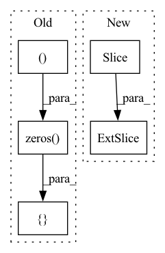

Pattern ID :12253

Before Change
def qrnn(ctx: Context, forget: jnp.ndarray, x: jnp.ndarray) -> jnp.ndarray:
dtype = forget.dtype
for i in range(int(math.log2(ctx.dims.sequence))):
x += jnp.concatenate([jnp.zeros((x.shape[0], 2 ** i, x.shape[2])), x[:, :-2 ** i] * forget[:, 2 ** i:]], 1)
forget *= jnp.concatenate([jnp.ones((x.shape[0], 2 ** i, x.shape[2])), forget[:, :-2 ** i]], 1)
return x.astype(dtype)
After Change
dtype = forget.dtype
for i in range(int(math.log2(x.shape[1]))):
x = x.at[:, 2 ** i:].add(x[:, :-2 ** i] * forget[:, 2 ** i:])
forget = forget.at[:, 2 ** i:].mul(forget[:, :-2 ** i])
return x.astype(dtype)
In pattern: SUPERPATTERN
Frequency: 3
Non-data size: 5
Instances
Fragment ID: 41564115
Project Name: homebrewnlp/homebrewnlp-jax
Commit Name: 84d9968e588d94725c4e22a879b4ab65591138de
Time: 2022-08-27
Author: 39779310+ClashLuke@users.noreply.github.com
File Name: src/model/qrnn.py
M Class Name: AnonimousClass
N Class Name: AnonimousClass
M Method Name: qrnn(2)
N Method Name: qrnn(3)
M Parent Class:
N Parent Class:
M File Name: src/model/qrnn.py
N File Name: src/model/qrnn.py
M Start Line: 12
M End Line: 16
N Start Line: 14
N End Line: 16
'>
Before Change
Relative shift implementation.
// batch, head, time1, 2*time1-1.
zero_pad = torch.zeros(
(*x.size()[:3], 1), device=x.device, dtype=x.dtype
)
x_padded = torch.cat([zero_pad, x], dim=-1)
x_padded = x_padded.view(*x.size()[:2], x.size(3) + 1, x.size(2))
x = x_padded[:, :, 1:].view_as(x)[
After Change
ones = torch.ones((x.size(2), x.size(3)), device=x.device)
x = x * torch.tril(ones, x.size(3) - x.size(2))[None, None, :, :]
return x[..., : pos_len // 2 + 1]
def forward(
self,
'>
Fragment ID: 41564118
Project Name: speechbrain/speechbrain
Commit Name: 84bca108f8c3739bc2f058bab7e43db32c46e090
Time: 2022-07-01
Author: dominik.wagner@th-nuernberg.de
File Name: speechbrain/nnet/attention.py
M Class Name: RelPosMHAXL
N Class Name: RelPosMHAXL
M Method Name: rel_shift(2)
N Method Name: rel_shift(2)
M Parent Class: nn.Module
N Parent Class: nn.Module
M File Name: speechbrain/nnet/attention.py
N File Name: speechbrain/nnet/attention.py
M Start Line: 470
M End Line: 484
N Start Line: 472
N End Line: 483
'>
Before Change
def rel_shift(self, x):
// batch, head, time1, 2*time1-1.
zero_pad = torch.zeros(
(*x.size()[:3], 1), device=x.device, dtype=x.dtype
)
x_padded = torch.cat([zero_pad, x], dim=-1)
x_padded = x_padded.view(*x.size()[:2], x.size(3) + 1, x.size(2))
x = x_padded[:, :, 1:].view_as(x)[
After Change
ones = torch.ones((x.size(2), x.size(3)), device=x.device)
x = x * torch.tril(ones, x.size(3) - x.size(2))[None, None, :, :]
return x[..., : pos_len // 2 + 1]
def forward(
self,
'>
Fragment ID: 41564117
Project Name: speechbrain/speechbrain
Commit Name: a12359c7af7e8ece051b675059d323f7aec86901
Time: 2022-06-22
Author: cornellsamuele@gmail.com
File Name: speechbrain/nnet/attention.py
M Class Name: RelPosMHAXL
N Class Name: RelPosMHAXL
M Method Name: rel_shift(2)
N Method Name: rel_shift(2)
M Parent Class: nn.Module
N Parent Class: nn.Module
M File Name: speechbrain/nnet/attention.py
N File Name: speechbrain/nnet/attention.py
M Start Line: 469
M End Line: 483
N Start Line: 471
N End Line: 482